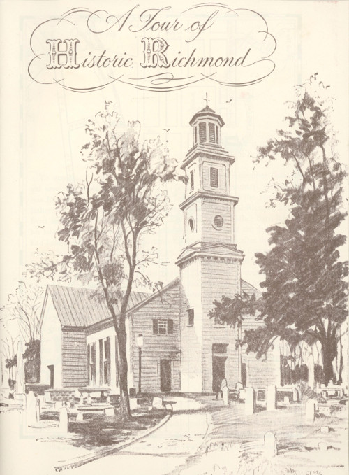
ALL ILLUSTRATIONS COPYRIGHT 1940 BY WHITTET & SHEPPERSON
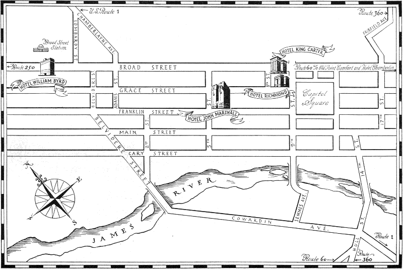
Richmond
Richmond—Capital of the Cavaliers—a city that is mellow and yet modern, where the rustle of the past may still be heard amid the bustle of the present.
To appreciate Richmond one must, before all else, remember that this old town has roots planted deep in the history of our country. Richmond was founded in 1737 by William Byrd II, of Westover on the James, forefather of two of Virginia’s illustrious sons of today, Admiral Richard Evelyn Byrd and Senator Harry Flood Byrd. But even before Father Byrd laid off his lots and established Richmond, this site at the falls of the James River had held a certain degree of importance. Just a few weeks after the Virginia settlers landed at Jamestown on May 13, 1607, to found the first permanent English settlement in America, Captain Newport pushed off up the James to find the route to the gold of the Indies. The barrier of rocks, known as the falls of the James, must have been an unwelcome sight to the eyes of that little band of intrepid explorers as it shattered their dream of easy passage to their expected El Dorado. Captain Newport, however, was the first of the Virginians to believe that no hoped-for golden future should stop a man from doing the sensible, practical things of the moment. Before very long, Captain Francis West had established a frontier post at the point where the falls interrupted further navigation of the river. It is hard to realize that Richmond was once on the western frontier of our country, but such was the case until about 1660, when settlers began that westward push that only ended when the Pacific was reached.
Richmond has seen much of the thrilling history of our country unfold. She was a promising village when George Washington and the son of her founder, Colonel Byrd, successfully led Virginia’s two regiments with the troops of her sister colonies and the British regulars in the French and Indian war. She was hostess to that brilliant group of patriots who gathered in St. John’s Church in 1775 to discuss what methods could be taken to avert 4 war with England, only to have Patrick Henry, grown sick of futile measures which obtained no justice for the colonists, rise to advocate the arming of the Virginia militia and utter those words which made him the embodiment of man’s immortal will to freedom: “Give me liberty or give me death.” She was the capital of the State from which Thomas Jefferson, Governor of Virginia, had to flee to prevent capture when Benedict Arnold swooped down on Richmond in 1781 and occupied the city for the British in America’s war for independence. Cornwallis visited it later in the same year. She was a thriving center of commerce in 1812 when the city was often alarmed by the news that the British were coming again, and in 1846 when her “Grays” were accepted for service in the Mexican War. She was the capital of the Confederate States of America from 1861-65, the hope of the South and the despair of the North for those four long, bloody, heart-breaking years. The best commanders, the most immense armies the Federal government could furnish, hammered, hammered at Richmond, while the South’s bravest hearts and keenest minds stood with their backs often at the very walls of the city, but would not let them pass. No city in America ever has or ever will be again so completely the goal of the whole American people. Those years and the ones that followed taught Richmond something that as a city she will never forget—that courage can rise above everything. The incredible sacrifices of Richmond people in that time knit the citizens together with bonds that even time cannot sunder. She was again prompt to the call of duty in 1898 when the country was challenged with outside danger, and once more poured forth her sons and funds in World War I; also in World War II she gave liberally of her sons and daughters and resources.
Those wars through which Richmond has lived are but distressing landmarks on the long trail our country has traveled. Her contribution has been equally as great in times of peace. In fact, probably her greatest contribution has been her way of life—a way based on the belief that the best of the old must be kept and adapted to fit in with the best of the new. The city has grown steadily; has been rebuilt after three destructions by fire. Today Richmond is a commercial, industrial, financial, medical and educational center of the South, and one of the fastest growing industrial centers in the nation. Richmond’s industry has been stable and resistant to wide fluctuations in business cycle.
Cities, after all, are but larger patterns of individual people. People who have been tested by time and tribulation and yet come out smiling, full of faith and courage, never fail to command our admiration. That Richmond has done this, we submit as our plea for your appreciation of our old city.
The people of Richmond have made the city and in turn been made by it. No one can long live in the mellowness of Richmond without feeling 5 that here is a calm that is not dead but gay, an ease and a friendliness that is real and not assumed, a determination to build always for the future but never to forget the heritage of the past which is our inspiration, a will to be of such a quality that we cannot fail to give strength to the nation, going always forward in the spirit of those who would surmount the obstacles of the present in order to attain goals inspired by ideals of right and justice.
Happily, Richmond has preserved much of her charm of a bygone day, despite the fact that she has kept step with the times. Innumerable shrines remain to remind the visitor of the dramatic part played by the city in the making of the nation. In virtually every quarter of the town will be found reminders of the past—public buildings, homes and gardens, memorials to her sons and daughters; in short, showplaces of wide interest to those who would acquaint themselves with the history of a section visited by Englishmen soon after the establishment of a settlement at Jamestown.
The tour has been planned on a geographic basis to permit as much as possible to be seen. It is almost impossible to sightsee chronologically in Richmond, as our forefathers built where they wished and not according to a city plan. The result is that the old buildings of Richmond are scattered quite widely. Leaving the heart of the city, we drive to the intersection of Third and Main streets and proceed south on Third to the end of the street, where we come to Gamble’s Hill Park.
Below you rolls “the mighty James,” the father of Virginia’s history, along the banks of which Richmond had her beginning. In 1645 Fort Charles was erected here at the falls of the James to protect the Tidewater settlers from the incursions of the Indians. The cross, planted on rugged boulders or river-jacks from the James, was erected here by the Association for the Preservation of Virginia Antiquities in memory of the valiant little group of explorers, who landed on an island below this point on May 24, 1607.
Across the ravine on the extreme right is the State penitentiary, ably run along modern lines.
Bringing your eyes along the crest of the same hill sloping down towards the river, you will see Hollywood Cemetery, where lie buried two Presidents of the United States, James Monroe and John Tyler; the President of the Confederate States of America, Jefferson Davis; General J. E. B. Stuart, Commodore Matthew Fontaine Maury, “the pathfinder of the seas;” Fitzhugh Lee (General R. E. Lee is buried in Lexington, Virginia); George E. Pickett and some 18,000 Confederate soldiers, including the Virginians who fell in Pickett’s charge at Gettysburg.
Immediately beneath Gamble’s Hill curve are the remains of the once vital Kanawha Canal, Virginia’s earliest great westward transportation system, of which George Washington was the first president in 1785.
Across the canal is the Tredegar Company, iron manufacturers, which has rounded out more than a century of service, having furnished munitions in the country’s last four wars. Here was rolled the armor-plate for the “Merrimac,” which, with the “Monitor,” made history in Hampton Roads in the first battle between iron-clads.
Leaving the park we pass on our left a remarkable structure, known as Pratt’s castle, constructed in the 1850’s. ¶ Proceed on Fourth Street to Canal, right on Canal to Fifth, left on Fifth to Main.
Here on Fifth Street, between Cary and Main, are several examples of the stately houses which made life in Richmond in the nineteenth century the gracious thing that it was. On your right are two old homes which have passed from the hands of the families that built and loved them. At the southeast corner of Main and Fifth Streets used to stand the Allan home where Edgar Allan Poe lived to young manhood with his foster parents. On the northwest corner of Fifth and Main Streets is an interesting octagonal house, built prior to 1814 by an early mayor of Richmond. ¶ Proceed on Fifth to Franklin, right on Franklin to 707 East Franklin.
This upright house, typical of many built by the wealthier Richmonders in the early nineteenth century, was lent to General Robert E. Lee as a home for himself when he could be in Richmond and for his family during the latter years of the War Between the States. It is now the home of the Virginia Historical Society, which has built a fireproof structure in the rear 7 for its priceless collection of papers. Many interesting things on view here merit a visit. ¶ Proceed east on Franklin to Ninth Street.
On your left, from Eighth to Ninth on Franklin Street, is situated the Federal Reserve Bank for the Fifth District, which embraces Virginia, North Carolina, South Carolina, Maryland, the District of Columbia, and part of West Virginia. ¶ Intersection of Franklin and Ninth.
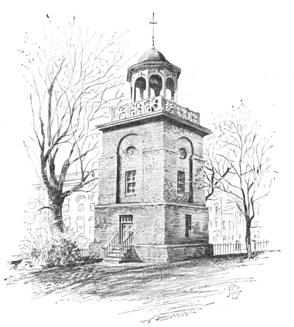
Old Bell Tower
Here you get your first view of the State Capitol and its grounds, but at this time confine your interest to the quaint structure directly ahead. It is the old Bell Tower, built in 1824 to replace the wooden tower from which had pealed forth the call to colors for regular and volunteer troops to defend Richmond from expected attacks. ¶ Right on Ninth to Main Street.
You are now in the heart of Richmond’s financial district. Many banking houses, however, are situated in other parts of the city.
One block to your left, on Main Street is the Federal building in which are located the United States Post Office and customs house. A part of this building was erected before the War Between the States and housed the executive offices of President Jefferson Davis and several members of his cabinet. Next to it is the city’s parcel post building. ¶ Proceed south on Ninth Street across Main to Canal, left on Canal to Fourteenth, right on Fourteenth to Bridge, halt.
Before you stretches one of the four bridges connecting Richmond’s north and south sides of the James River. Beyond the bridge, near the huge grain elevator, is where Capt. John Smith first landed in Richmond. The land was originally purchased from Chief Powhatan. ¶ Back (north) on Fourteenth to Main and right on Main to Fifteenth.
The southeast corner on your right is the site of the Southern Literary Messenger Building, where Edgar Allan Poe edited that magazine to enduring fame. Across the street is the site of Bell Tavern, one of the famous places of rendezvous in early Richmond and recruiting station during the War of 1812. ¶ Continue east on Main to Seventeenth.
Passing the Main Street Station (C. & O. and Seaboard) on the left, you come to the Old Market. On this site, from the earliest days, the farmers would gather to sell their produce to the city folk. To the left of the market, Negro washerwomen used to spread their wash on the grassy bank of Shockoe Creek, the frequent floods of which were the chief excitement of the old town. The women chatted and lightened their work by singing. The darkies’ melodious voices, blending with the cries of the food hawkers, must have made the market the gayest spot in Richmond. ¶ Continue on Main, halting three-fourths of the way between Nineteenth and Twentieth.
On your left is the oldest house in Richmond, erected about 1686. On the front wall may be seen the letters “J.R.,” supposed to signify “Jacobus Rex,” James II, who was then King of England. The building is now a part of the Edgar Allan Poe Foundation, which includes also the small buildings on the left and right, in the three of which are housed much Poe material and many articles relating to his residence in Richmond. In the rear is an “enchanted garden” which leads to a classical loggia, built chiefly of material from the former Southern Literary Messenger building. ¶ Turn right on Twentieth to Cary.
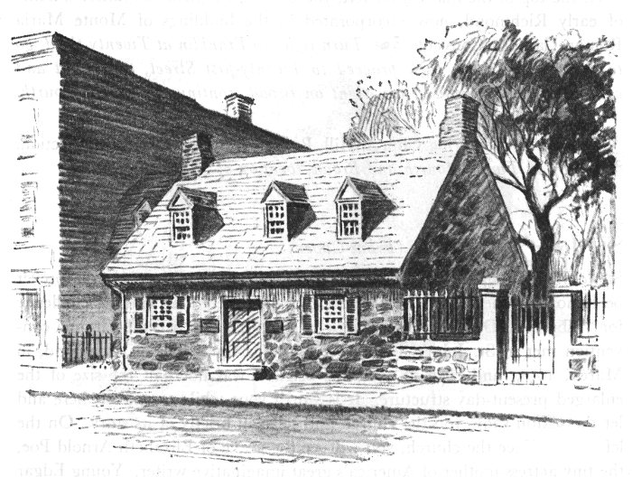
Poe Shrine
On the southeast corner of Cary stood Libby Prison, where thousands of Federal prisoners were confined during the War Between the States. The old warehouse-prison building was torn down and taken to Chicago to be rebuilt for the World’s Fair of 1893.
You are now in the heart of the tobacco district of Richmond. For blocks may be seen Richmond’s famous “Tobacco Row.” ¶ Turn left on Cary to Twenty-first, left on Twenty-first to Main, left on Main to Eighteenth Street; right on Eighteenth one block to Franklin.
The wooden building on the right is the oldest Masonic hall in continuous use in the United States which was built originally for Masonic purposes. Governor Edmund Randolph was among the many prominent Virginia Masons who participated in the corner-stone laying in 1785. Lafayette was given a reception here in 1824 on his triumphal return visit to the scenes where he had served in the American Revolution. ¶ Proceed east on Franklin, halting briefly between Twenty-first and Twenty-second.
At the top of the hill to your left, you can see a typical old galleried home of early Richmond, now incorporated in the buildings of Monte Maria Roman Catholic Convent. ¶ Turn right on Franklin at Twenty-third, go to Main, turn right, then proceed to Twenty-first Street, turn right and continue north to Broad, turn right on Broad, continue to Twenty-fourth.
You are now entering Church Hill, Richmond’s oldest residential section. ¶ Stop at Twenty-fourth and Broad, location of St. John’s Church.
St. John’s Episcopal Church, built in 1741, the oldest in the city, will forever be famous as the place where Patrick Henry uttered his ringing challenge for “Liberty or Death” to the American colonists. The second Virginia convention met in St. John’s, because it was the largest hall in Richmond, in March, 1775, and even at that, the original was not half the size of the enlarged present-day structure. It is worth your while to get out here and let the sexton show you the church and tell you briefly of its story. On the left, as you face the church, you will see the grave of Elizabeth Arnold Poe, the tiny actress-mother of America’s great imaginative writer. Young Edgar Poe is said to have been found more than once lying sobbing on his mother’s grave. ¶ Proceed east on Broad to Twenty-eighth; right on Twenty-eighth two blocks to Franklin.
Here, at Libby Hill Park, is the Soldiers and Sailors Monument, erected in 1894 as a memorial to the soldiers and sailors of the Confederacy. The figure on the top is by William L. Sheppard. ¶ Return to Broad Street; turn left on Broad, halting between Thirteenth and Twelfth.
This unusual-looking Episcopal church structure was built in 1812 as a memorial to more than seventy persons, including the Governor of Virginia, who lost their lives in a fire which destroyed a theatre on this site on December 26, 1811. In this theatre Edgar Allan Poe’s mother had acted a few short months before, and in this same theatre the Virginia Convention of 1788 had ratified the Federal Constitution. ¶ Proceed west on Broad (Passing Medical College of Virginia Hospital Building) to Twelfth, turn right on Twelfth to Marshall, turn right on Marshall to center of block.
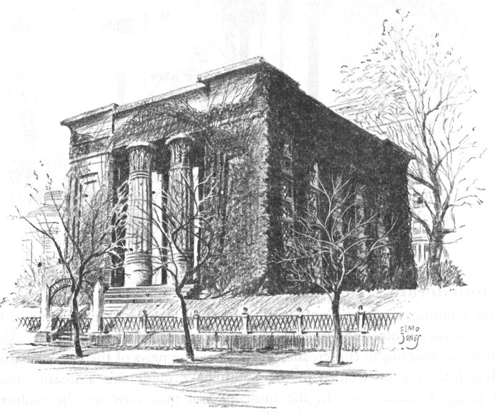
The Egyptian Building · Medical College of Virginia
You are now in the center of the buildings of the Medical College of Virginia which cover several city blocks. Particularly notable is the concrete building on your right at the end of the block which is stated to be “the most perfect example of Egyptian architecture in America.” Erected in 1845, it is the earliest in the Medical College group. This is one of the oldest medical schools in the South and the only one to remain open during the War Between the States. The buildings now composing the Medical College 12 group afford not only an imposing sight but with their facilities contribute greatly to the importance of Richmond as one of the leading medical centers of the country. ¶ Circle block to right, returning to Twelfth. Proceed north on Twelfth two blocks to Clay, turn right on Clay.
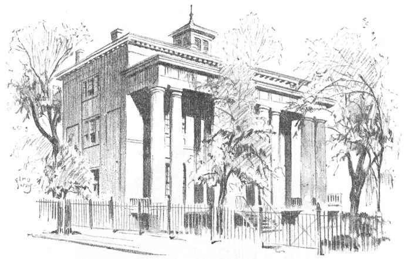
Confederate Museum (White House of the Confederacy)
This building, now the Confederate Museum, was the White House of the Confederacy from 1861-65. Here lived President Jefferson Davis. Here came the generals to confer, the couriers bearing news of the various battles. Most fittingly, the women of the South have made this a treasure-house of things Confederate. In the museum you may now see the uniforms, swords, camp chest and multitudinous relics of Generals Robert E. Lee, Thomas J. (“Stonewall”) Jackson, Joseph E. Johnston, J. E. B. Stuart and most of the other Confederate heroes. The student of that phase of our history finds here invaluable historical papers and files. ¶ Make a U-turn and proceed west on Clay to Eleventh.
This Museum of the Life and History of Richmond, founded by Mann S. Valentine and opened in 1898, now includes four 19th century buildings. The Wickham-Valentine House, designed by Robert Mills in 1812, is a 13 notable example of late Georgian architecture, with furnishings of that period and of 1853, and with a walled garden that is restful and beautiful in all seasons. The adjoining Museum building contains a growing collection of permanent Richmond exhibits and the largest costume department in the south. The Indian collection emphasizes archaeological material from Virginia and North Carolina. Changing exhibitions illustrate past and present city activities and interests. Facing the garden is the Studio of the sculptor, Edward V. Valentine. The Bransford-Cecil Memorial House, in the Greek Revival style of the 1840’s, contains a gallery-lecture room; a Research Library, with extensive pictorial material illustrating Richmond’s history; and the School Services’ office and workrooms, where two staff members carry on an organized statewide program of lectures, loans, and special projects for children. ¶ Proceed west on Clay to Eighth, turn left Eighth to Marshall, turn left on Marshall.
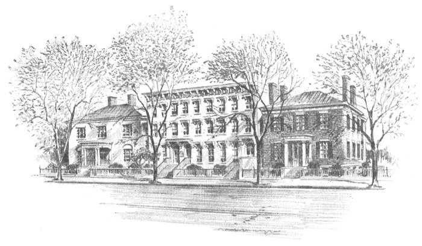
Wickham-Valentine House
On the northwest corner of Ninth and Marshall is John Marshall House. This house, severely simple on the exterior, boasts a classic dignity inside which proves that John Marshall, as well as his politically different cousin, Thomas Jefferson, could design homes. The eminent jurist himself designed 14 this home. The house is now the property of the Association for the Preservation of Virginia Antiquities, the first of such societies in America. It is furnished with some of Marshall’s original furniture. You may see here the robe which Marshall wore as Chief Justice of the United States. The large structure to the rear of the house is John Marshall High School, one of Richmond’s two public high schools. ¶ Continue on Marshall to Tenth, turn right on Tenth. Continue on Tenth to Broad.
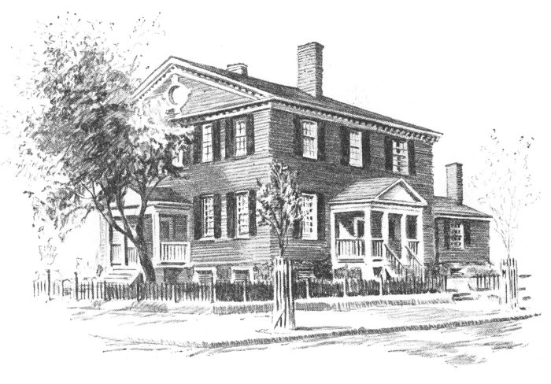
John Marshall House
The large gray stone structure on the southeast corner of Broad Street is the City Hall. Dedicated in 1894, it was built on the site of the old City Hall, erected in 1816 and condemned in 1874. This building contains the offices of the Mayor, the City Manager and various municipal departments. ¶ Cross Broad and continue on Tenth to Capitol Street. Turn right on Capitol one block to Ninth. Turn left on Ninth to entrance of Capitol Square.
Commanding the driveway stands the equestrian statue of Washington, executed by Thomas Crawford and cast in Munich at a cost of $100,000. Chief Justice John Marshall headed the committee to raise the subscriptions, beginning the work in 1817 when the city boasted less than 6,000 white inhabitants. 15 The monument was unveiled in 1858. Around the central figure of Washington are statues of some of Virginia’s famous sons, builders of the nation as well as of their state: Patrick Henry, George Mason, Thomas Jefferson, Thomas Nelson, John Marshall, and Andrew Lewis. It was at the base of this statue that the second inauguration of Jefferson Davis as President of the Confederate States of America took place, February 22, 1862.
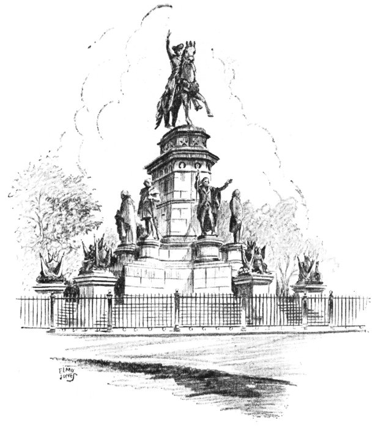
Washington Monument
The central part of the Capitol was designed after the Maison Carrée at Nimes by Thomas Jefferson while minister to France from the United States. The original part was commenced in 1785 and finished about 1792, and the wings were added, to give the legislators much-needed space, in 1905. In the rotunda in the old central part, you will see the most celebrated work of the great French sculptor, Houdon—the life-size statue of Washington, the only one posed from life which is in existence today. It was placed here in 1788. Here also is a head of Lafayette by Houdon. Virginia has made 16 this rotunda her Hall of Presidents by placing here busts of her other seven native sons who have become chief executives of the United States.
Opening off the rotunda is the old hall of the House of Delegates, where Aaron Burr, in 1807, was tried for treason before Chief Justice Marshall. In this hall occurred a great tragedy in 1870, when the balcony gave way because too large a crowd of people had packed every inch to hear a trial of deep local interest. Sixty-three were killed and two hundred and sixty injured. The hall has been restored to its original appearance. Where his statue now stands, Robert E. Lee, on April 23, 1861, accepted the command of Virginia’s forces. Here met the Confederate House of Representatives from 1861-65. The present Virginia Senate and House of Delegates meet in modern chambers in the two wings.
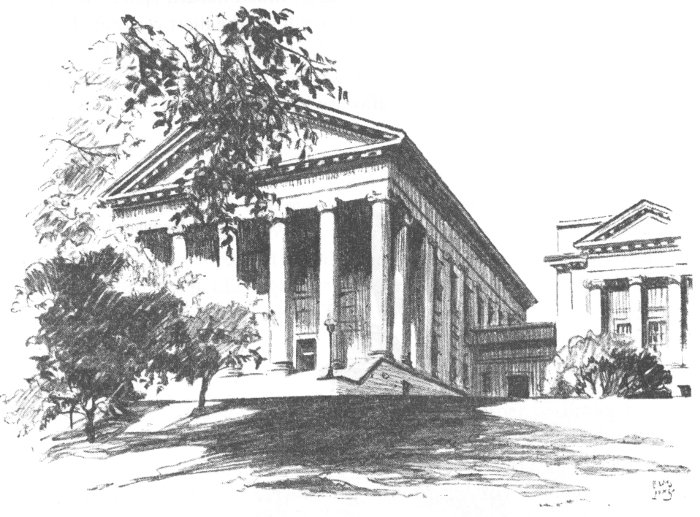
State Capitol Building
Leaving the Capitol by the main door, you see on the left the modern State office building and the Finance Building on the terrace. In the basement at the South end of the Finance Building is an interesting museum containing exhibits of Virginia’s natural resources, agricultural products and wild life.
Swinging around the Capitol, you come to the Federal-style Governor’s Mansion, erected in 1811-13. From 1788 to 1811 the governors of Virginia had to live in a two-story wooden structure, ironically called “The Palace,” located on the same site as the present building. Just outside the Capitol Square, to the north, you will see the new State Library and Supreme Court of Appeals building. ¶ Leave Capitol Square by same gate through which you entered, stopping on Grace just across Ninth.
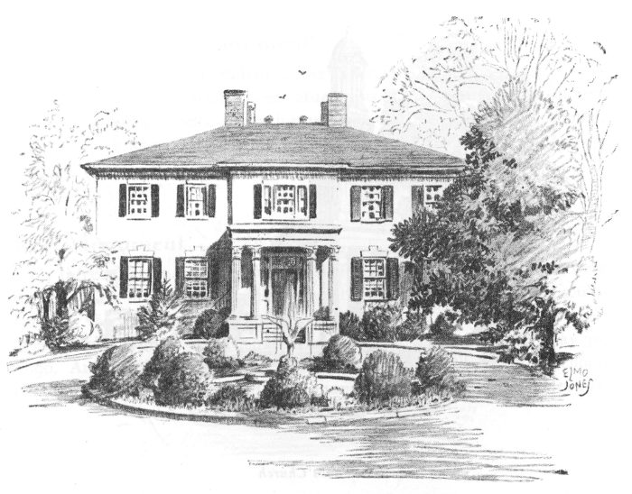
Governor’s Mansion
Situated here at Ninth and Grace is St. Paul’s Episcopal Church. General Robert E. Lee worshipped here whenever he was in Richmond during the War Between the States, as did President Jefferson Davis regularly. Up an aisle to this church on Sunday, April 2, 1865, strode a messenger to President Davis’ pew. Davis quietly left the church. The message told him that Petersburg had fallen, that Richmond must be evacuated. The church is filled with memorials of many kinds, and is referred to by some as “The Westminster of Richmond.” ¶ Proceed westward on Grace to Seventh Street.
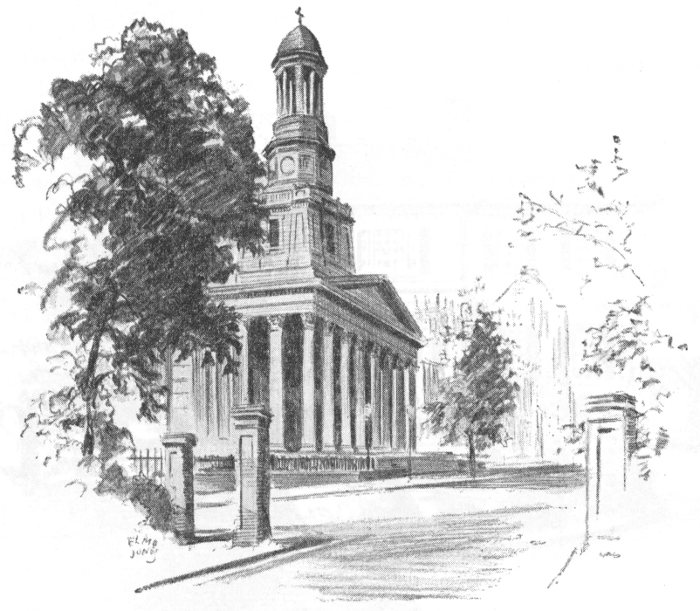
St. Paul’s Church
Grace Street, for several blocks west, is one of Richmond’s newest downtown retail shopping centers. Once a residential section, it now takes its place with Broad Street (one block to the right) as a major business thoroughfare. ¶ Turn right on Seventh three blocks to Clay. Turn left on Clay to Sixth.
Country produce and Negro flower-sellers combine to make this a colorful sight in the vicinity of Marshall and Sixth Streets. ¶ Continue on Sixth three blocks to Grace. Turn right at Grace. Proceed west on Grace to end of 1100 block and turn left on Lombardy one block to Monument Avenue. Turn right; halt.
Here begins Monument Avenue, the continuation of Franklin Street, the newer section of the thoroughfare that has long been a main residential street of the city. This avenue takes its name from monuments to Confederate leaders.
This statue by Fred Moynihan shows General Stuart, the great cavalry leader, in a typically dashing pose. Stuart was one of the most colorful men in the Confederacy, once riding his men eighty miles in 27 hours, another time riding around McClellan’s whole army—always courageous, always gay. ¶ Proceed westward one block on Monument to Allen Avenue.
Only three letters mark this monument—Lee. The South felt no more were needed. This marvelous likeness of General Lee on “Traveller” was sculptured by the French artist, Jean Antoine Mercie, and was unveiled by Lee’s West Point classmate and friend, General Joseph E. Johnston, on May 30, 1890. Arrived in Richmond, the statue was drawn to its location by schoolchildren. ¶ Proceed westward on Monument four blocks to Davis Avenue.
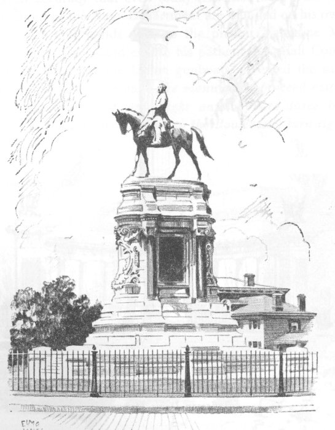
Lee Monument
The monument to Jefferson Davis, sculptured by E. V. Valentine, shows the President of the Confederacy in the posture of oratory. Around the monument are excerpts from this most notable speeches. ¶ Proceed westward on Monument three blocks to the Boulevard.
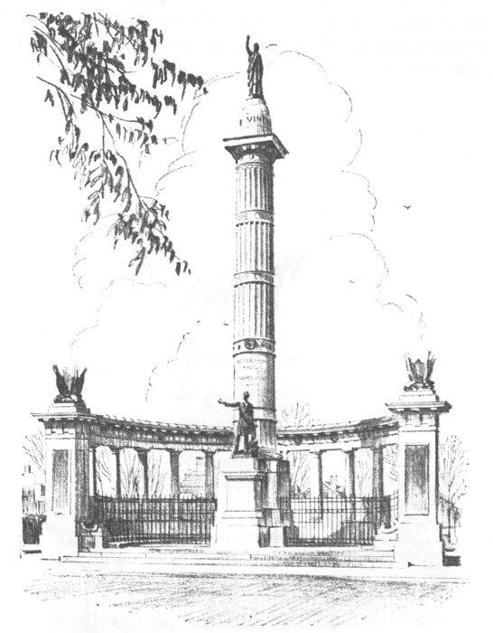
Jefferson Davis Monument
On your left, at Monument Avenue and the Boulevard, is First Baptist Church, one of Richmond’s numerous large churches.
This monument to Thomas J. (“Stonewall”) Jackson, the sculpture for which is the work of F. William Sievers, shows him mounted on “Sorrel,” facing north, because he so resolutely opposed the Northern army. Jackson, whose brilliant strategy is studied today by soldiers the world over, was a stern, Cromwellian type of commander in strange contrast to the dashing Stuart. Lee called him his “right arm,” and no one has ever been able to estimate the severity of the blow his death dealt the Southern cause. ¶ Continue westward on Monument to Belmont.
Commodore Matthew Fontaine Maury (F. William Sievers was the sculptor for this monument), is not as well known to the average citizen as he deserves to be, but sailors on all the seas know his work and are grateful for it. He is known as “The Pathfinder of the Seas” because he charted the oceans with such accuracy that even today the Pilot Charts issued by the Hydrographic Office of the Navy Department are founded on his researches. In the house which still stands close to the present Valentine Museum, Maury, seeking ways that would enable his pathetically small Confederate Navy to be effective against the Union gunboats, invented the submarine electrical torpedo. ¶ U-turn around the monument; proceed eastward on Monument one block to Sheppard; right on Sheppard three blocks to Kensington; proceed left on Kensington to the Boulevard; turn right.
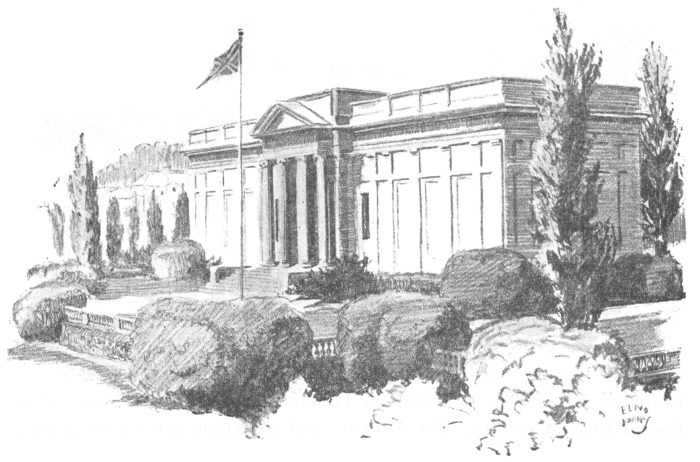
Battle Abbey, Confederate Memorial Institute
The Battle Abbey, or Confederate Memorial Institute, houses a large collection of portraits of Confederate officers, and collections of Confederate battle flags, arms and equipment, but is chiefly distinguished for its very beautiful series of mural paintings of Confederate scenes by the French artist, Charles Hoffbauer. The artist had done much of his preliminary work when he was called back to fight for France in 1914. When he returned to Richmond after the war, Hoffbauer painted out all he had previously done and painted war as only one who had been through it could. Since 1946 the Abbey has been the property of the Virginia Historical Society. ¶ Proceed on the Boulevard to Grove.
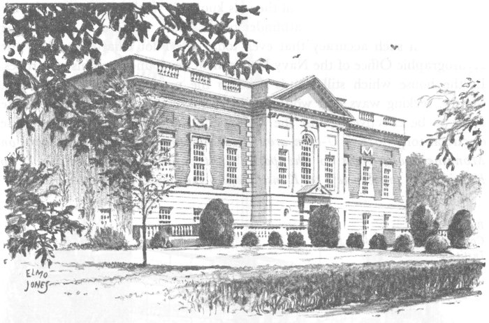
Virginia Museum of Fine Arts
This State institution, opened in January, 1936, houses the famous John Barton Payne collections of paintings and prints; the T. Catesby Jones collection of twentieth century European paintings, the Glasgow collection of European Renaissance art, and the fabulous Lillian Thomas Pratt collection of Russian jewelry. The Museum and collections are valued at more 23 than $5,000,000. In addition to its collections, it conducts a regular program of specially assembled exhibitions, lectures and concerts. The museum is the largest art museum in the South and has gained a national reputation because of its biennial exhibitions of contemporary American paintings as well as many other special exhibitions. ¶ Proceed on the Boulevard two blocks to Ellwood Avenue, turn right on Ellwood six blocks to Nansemond. Turn left on Nansemond one block to Cary Street. Turn right on Cary to central entrance of Windsor Farms residential area. (Street is marked Windsor Way). Proceed through Windsor Farms to Virginia House on Sulgrave Road at Wakefield Road.
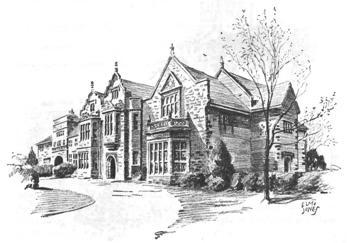
Virginia House
Virginia House, home of the late Ambassador and Mrs. Alexander W. Weddell, is built of materials they brought from Warwick Priory, Warwick, England, in 1925. The central section is a reproduction of the Tudor portion of Warwick Priory, founded by the first Earl of Warwick; the right-hand section is an exact replica of the only portion of Sulgrave Manor which remains as it was at the time Lawrence Washington occupied it as his manor 24 house. The royal coat of arms may be seen over a second-story window to your right. The arms were conferred to show that the house had given shelter to Queen Elizabeth in 1572. The house is now the property of the Virginia Historical Society. ¶ Pull up about 100 yards.
Agecroft was originally built in Lancashire, England, about 1393, brought to Richmond and faithfully rebuilt here in 1925. The old plaster and timber house was the seat of the Langleys, a branch of the royal Plantagenets. Some of its most beautiful features are an oriel window and the great hall with gallery for minstrels, paneled with oak and lighted by stained glass windows. The house is eventually to go to the city as a generously endowed art museum. ¶ Return to Cary Street Road, turn left, proceed westward to Wilton Road, turn left, proceed to entrance to Wilton (marked) at end of thoroughfare.
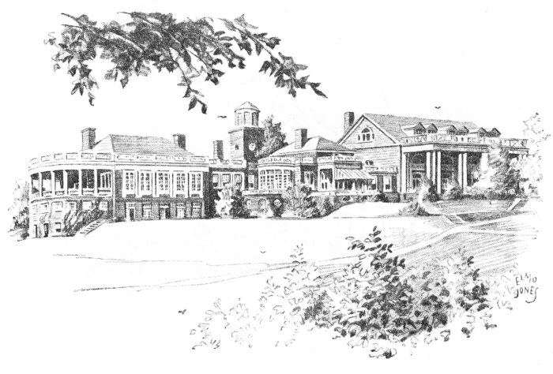
Country Club of Virginia
This stately house was built in 1753 for William Randolph III on a site overlooking the James about six miles below Richmond. The Colonial Dames of America in the State of Virginia bought it several years ago to 25 save the beautiful paneling from being sold out of Virginia, and had it faithfully rebuilt here on another site overlooking the James. ¶ Return to Cary Street Road, turn left and proceed westward to intersection of Cary Street Road and Three Chopt Road.
This is Richmond’s largest country club, although there are other private clubs and public golf courses. The Country Club of Virginia boasts one eighteen-hole golf course and one short course at this club, and a very fine eighteen-hole course up the James River, where the Club has another smaller clubhouse, skeet shooting traps and river sports. ¶ Continue out Three Chopt Road to Towana Road, which leads to the University of Richmond.
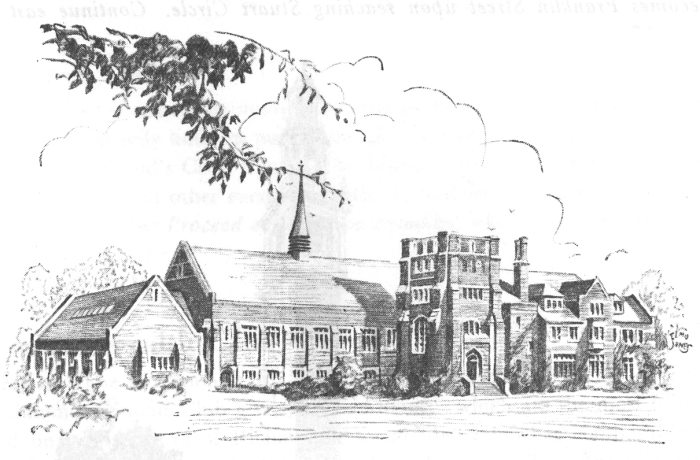
Social Center and Gymnasium · University of Richmond
The University of Richmond includes Richmond College, a college of liberal arts and sciences for men; Westhampton College, offering the same courses to women; the T. C. Williams School of Law for professional study; and the Evening School of Business Administration. We pass through the men’s college, and across the lake to the women’s college. ¶ Proceed on out of Westhampton College to River Road, turn left on River Road back to Cary Street Road, right on Cary back to Boulevard, right on Boulevard to Columbus Monument, Byrd Park.
This monument was erected by the Italians of Richmond. The park includes tennis courts, playgrounds, acres of woodland, and a small boating lake to your left. Southeast of this point lies Shields Lake, the mecca of Richmond swimmers in the summer, and beyond that “Maymont,” the city’s most beautiful park. ¶ Turn right, proceed around reservoir.
This carillon is Virginia’s memorial to her dead of World War I. The bells were imported from England. A museum containing relics of that costly European struggle is located in a room at the base of the tower. ¶ Return north on Boulevard to Monument Avenue, turn right on Monument, which becomes Franklin Street upon reaching Stuart Circle. Continue east to Laurel Street.
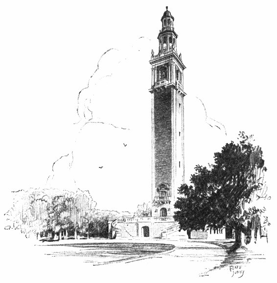
World War I Memorial · The Carillon
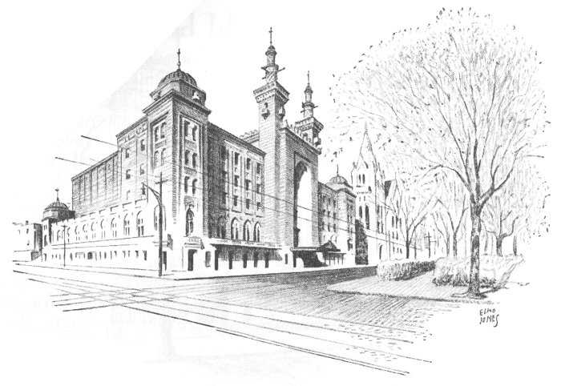
Richmond’s Civic Center (The Mosque)
On the right is one of the many municipal parks, most of which are located outside the heavily built-up part of the city. Looking through the park you can see Richmond’s Civic Center, The Mosque, where conventions, exhibitions, concerts and other events are held. It contains an auditorium seating 5,000 persons. ¶ Proceed eastward on Franklin, halting between Madison and Henry Streets.
Here at “The Commonwealth,” the mid-town men’s club of the city, the Richmond German Club gives the “Germans,” which are the most formal and unusual features of Richmond’s social life, somewhat comparable to the Philadelphia Assemblies and Charleston’s St. Cecilias. ¶ Continue eastward on Franklin to First Street.
The modern building on the southeast corner is the main City Library, a gift to the city, of the late James H. Dooley. It was built in 1930 on the site of the birthplace of James Branch Cabell, Virginia author. The library has nearly 200,000 catalogued volumes, pamphlets, periodicals, recordings and sheet music. ¶ Continue eastward on Franklin, halting briefly between Second and Third Streets.
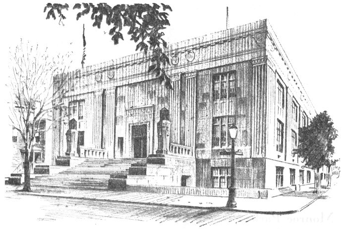
City Library
The Woman’s Club has preserved this comfortable nineteenth century home by adding a larger auditorium at the back and making it their clubhouse, where are heard many of the distinguished lecturers and artists of today.
* * * * * * *
It is interesting to tour Richmond’s Battlefield Park, which embraces the fields covered during the Seven Days’ Campaign (June 26-July 2, 1862) and at Second Cold Harbor, May 31-June 3, 1864. The battlefields of Fort Harrison, Malvern Hill, Frayser’s Farm, Savage Station, Fair Oaks, Seven Pines, Cold Harbor, Gaines’ Mill, and Mechanicsville may be toured. Fort Harrison, six miles east of the city is Park Headquarters. An interesting museum is located there.
Historical shrines of world-wide interest, excellent transportation service, splendid modern hotels, and every facility available for successful meetings have made Richmond one of the outstanding convention centers of America. Delegates attending conventions here have a wide choice of selecting their entertainment programs. Some enjoy trips to Williamsburg, Jamestown, Yorktown, historic Hampton Roads and Fort Monroe, the beautiful Skyline Drive, the battlefields surrounding the city and the many diversified industrial plants, while others participate in their favorite sport or seek diversions in the many forms of entertainment to be had.
Proximity to the centers of the population, coupled with other numerous advantages, has resulted in record-breaking attendance at meetings here.
In Richmond, Capital of the Old South, an industrial, commercial, educational and financial center of the new, nothing is left undone to make every convention meeting in this city successful and enjoyable.
* * * * * * *
POPULATION of approximately 360,000 in the metropolitan area with an average increase 7,000 per year since 1940.
INDUSTRIAL RANK of 5th in the nation in relative gain in net value of manufactured products from 1929 to 1947.
CIGARETTE CAPITAL of the Nation, with annual output of more than 110 billion cigarettes—enough to reach the moon and back 10 times, or encircle the earth 180 times.
PRINCIPAL INDUSTRIES in order of employment rank: cigarettes and other tobacco products, chemical products including rayon and cellophane, food and kindred products, furniture and wood products, metals and metal products, apparel and textile products, paper and paper products, printing and publishing.
TRADE CENTER of the South Atlantic region, ranking 35th in retail sales, 29th in wholesale sales, among principal cities of the Nation.
FINANCIAL CENTER and headquarters of the 5th Federal Reserve District; 11 other banks and trust companies; home office of 32 insurance companies.
TRANSPORTATION GATEWAY with 6 trunk-line railroads, 5 air lines, 6 inter-city bus lines, 50 motor freight carriers, and water freight service on the James River.
BALANCED ECONOMY with employment widely diversified and strong consumer goods industries result in unusual economic stability and resistance to fluctuations in the national business cycle.
RECREATIONAL: 1 public and 5 private golf courses, 30 theatres, a stadium for athletics, municipal swimming pool, a Civic Center for opera, large conventions, etc., seating 5,000; 18 parks and 43 playgrounds.
CLIMATE: Equable climate with average temperature, 57.9 degrees F.; mean annual rainfall, 42.02 inches.
EDUCATIONAL: University of Richmond, Medical College of Virginia, Richmond Professional Institute of College of William and Mary, Union Theological Seminary, Presbyterian Training School, Virginia Union University (Colored), 16 private and 14 parochial schools, 4 business colleges, 52 public school buildings, state and municipal libraries, numerous museums, etc.
MEDICAL CENTER: Institutions and specialists of wide renown. Medical College of Virginia—with schools of medicine, dentistry, pharmacy and nursing; 17 hospitals with 3,527 beds.
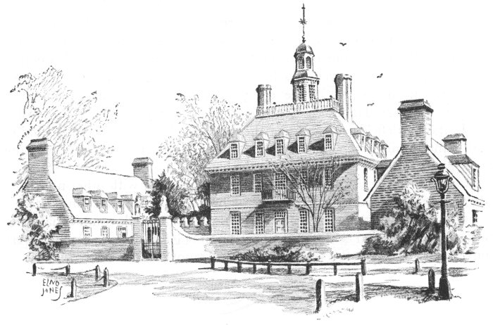
The Governor’s Palace at Williamsburg
Only an hour’s drive southeast of Richmond on Route 60 is the most historic area to be found anywhere in America.
Here is Williamsburg, the former center of English culture in the new world, almost completely restored to its eighteenth century appearance. Here you will see the historic Colonial Capitol, The Governor’s Palace and its beautiful grounds, the famous Raleigh Tavern, the Public Gaol, the famed Sir Christopher Wren Building of the College of William and Mary and many other colonial structures restored through the beneficence of Mr. John D. Rockefeller, Jr.
Seven miles from Williamsburg is Jamestown Island where in 1607 the first permanent settlement of English speaking people in the New World was established. A ruined tower of an early Colonial church still stands here, and many interesting relics are on display in the grounds which are under the supervision of the Association for the Preservation of Virginia Antiquities.
Yorktown is only fifteen miles from Williamsburg. This famous little town which saw a great nation come into being bears a great heritage. It was here that proud Lord Cornwallis was forced to surrender to General George Washington and his continental forces in 1781. The original fortifications erected during the great siege of Yorktown have been restored. Historic 31 buildings and relics of the Revolution make Yorktown a spot which every American citizen should visit.
Less than an hour’s drive from the Colonial Williamsburg area is Hampton Roads, an important channel through which the waters of three rivers pass into the Chesapeake Bay. Fort Monroe, on Old Point Comfort, and Fort Wool, on an island in the channel, defend the entrance from the Bay. It was in Hampton Roads that the first battle between iron-clad vessels, the Monitor and the Merrimac, took place on March 9, 1862. President Lincoln, Secretary Seward and Confederate commissioners held their “Hampton Roads Conference” on a steamer near Fort Monroe on February 3, 1865.
Be sure to visit Williamsburg, Jamestown, Yorktown and the Hampton Roads area during your visit to Richmond, for nowhere else may you cover as much historic and hallowed ground in a single day. This famous area may be reached quickly and conveniently. Ask for information which will facilitate your trip there.
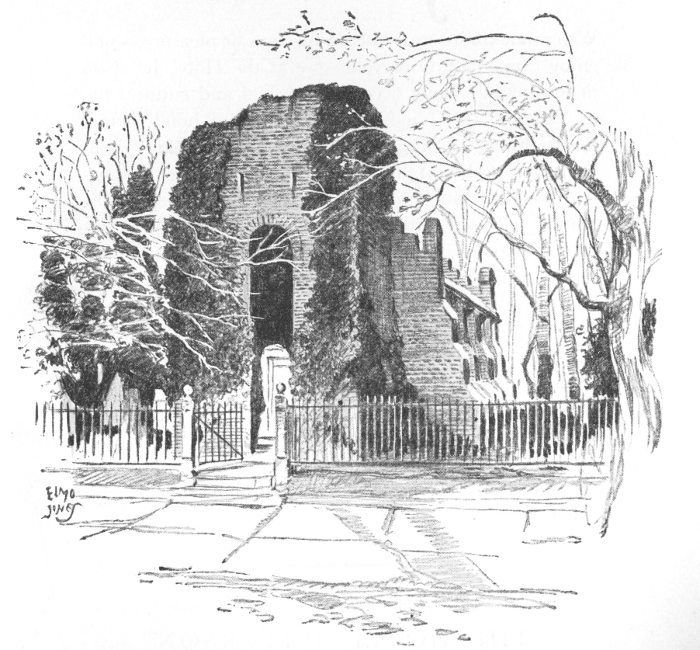
Jamestown Tower
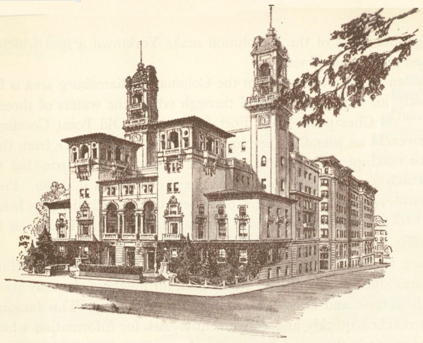
Whether you’re traveling on business or pleasure, you’ll enjoy every minute of your stay at the Hotel Jefferson in Richmond. Long a center of social and cultural life in Virginia, this famous recently-restored hotel merges the traditions of the past with present-day beauty, convenience and hospitality.
Among the things which will make your visit enjoyable are the Jefferson’s world-famous Lobby ... the luxurious Empire Room ... Jefferson Court with its renowned statue of Thomas Jefferson ... the new Fountain Room and the efficient, beautifully-appointed Coffee Shop ... the handsome, spacious Auditorium and Banquet Rooms ... the lovely Guest Rooms and the Jefferson’s traditional hospitality and service.
The Jefferson is located just outside the noisy section of the city, yet within easy walking distance of theatres, shopping district and financial section. It is convenient to all forms of transportation. Free parking space is provided. Rates range from $3.50.
For further information communicate with
THE HOTEL JEFFERSON
JAMES M. POWELL, Manager
Richmond, Virginia